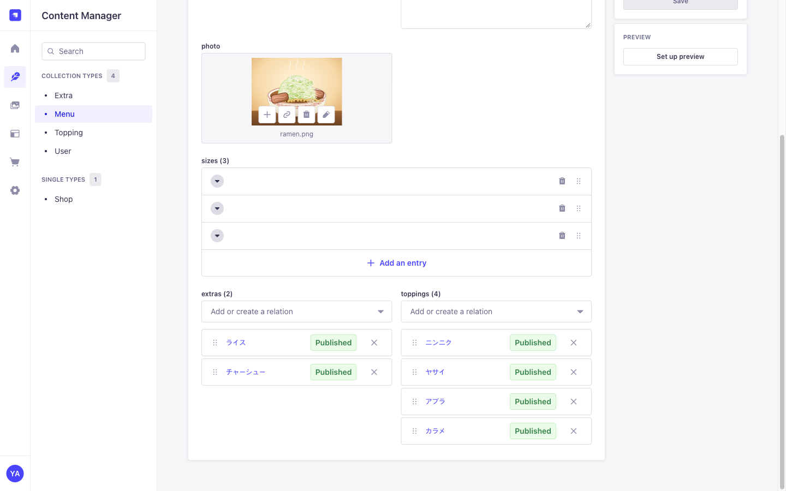
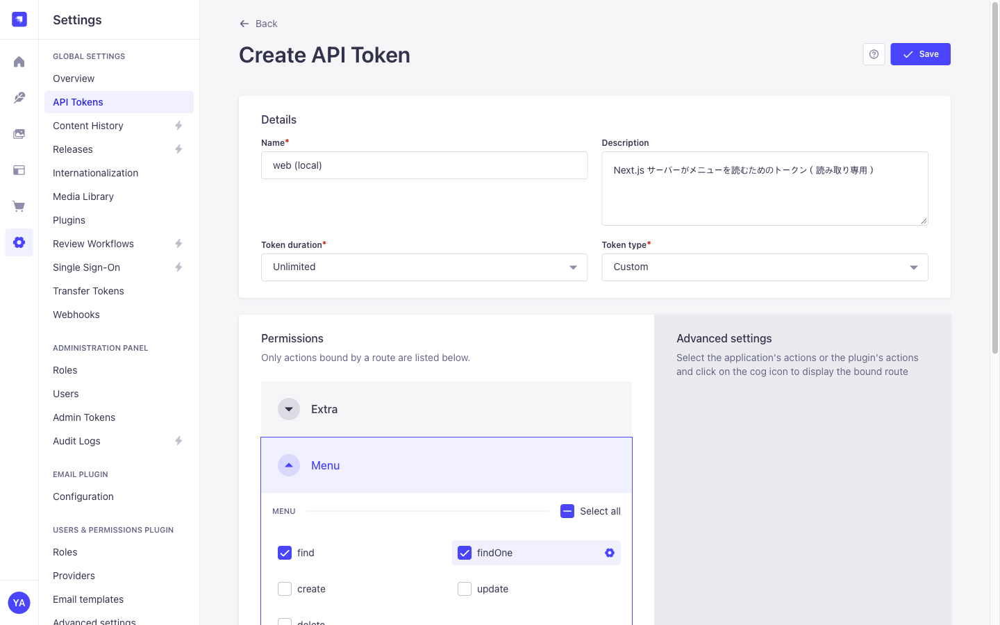

데이터 입력과 API 토큰
02장에서 만든 그릇에 데이터를 담고, Next.js가 그 데이터를 꺼내 갈 수 있도록 "읽기 전용 열쇠"를 발급합니다. 이 장도 코드는 쓰지 않습니다.
관리자 화면에서 가게 정보와 메뉴를 입력하고 공개한 뒤, API 토큰을 발급해 curl로 메뉴 데이터를 꺼내 본다.
1. 데이터 입력과 공개
왼쪽 메뉴의 Content Manager에서 02장에서 만든 그릇마다 데이터를 입력합니다. 순서는 연결될 쪽을 먼저: Topping·Extra를 만든 뒤 Menu에서 그것들을 고릅니다.

| 입력하는 곳 | 이 자료의 예시 |
|---|---|
| Shop | 麺屋ヤマモリ / 野菜マシマシ、ニンニクが効いたキム系ラーメン / 주소·영업시간·정기휴일·식권 규칙 / 가게 사진 |
| Topping ×4 | ニンニク・ヤサイ・アブラ・カラメ, levels 는 모두 ナシ / フツウ / マシ / マシマシ |
| Extra ×2 | ライス 100, チャーシュー 200 (사진 포함) |
| Menu ×2 | ラーメン: sizes small 300g 800 / medium 400g 900 / large 500g 1000, extras 2개, toppings 4개 つけ麺: sizes 900 / 1000 / 1100, extras ライス, toppings 4개 |
사진은 photo 칸에서 업로드합니다. 한 번 올린 사진은 Media Library에 모여서 다른 항목에서도 골라 쓸 수 있습니다. 반복 부품(sizes, levels)은 Add an entry로 필요한 만큼 추가합니다.
Content Manager의 각 목록에서 모든 항목의 상태가 Published로 표시됩니다.
2. API로 꺼내 보기: 먼저 "막혀 있는지" 확인
Strapi는 입력한 데이터를 자동으로 API(프로그램이 데이터를 받아 가는 창구)로 제공합니다. 주소는 /api/복수형이름입니다.
실행 위치: 아무 곳 (Strapi 실행 중)
curl http://localhost:1337/api/menus{"data":null,"error":{"status":403,"name":"ForbiddenError","message":"Forbidden",...}}403(권한 없음)이 나오면 정상입니다. Strapi의 API는 기본적으로 모두 잠겨 있습니다. 잠금을 푸는 방법은 두 가지입니다.
| 방법 | 누가 읽을 수 있나 | 이번 선택 |
|---|---|---|
| Public 역할에 권한 부여 | 인터넷의 누구나 (브라우저에서 직접 호출 가능) | |
| API 토큰 발급 | 토큰을 가진 쪽만 | ✔ Next.js 서버만 토큰을 가진다 |
토큰은 열쇠입니다. 열쇠를 Next.js 서버 안에만 두면, 브라우저(손님)는 Strapi에 직접 접근할 수 없고 반드시 Next.js를 거치게 됩니다(00장 흐름의 ④).
3. API 토큰 발급
Settings(톱니바퀴) → API Tokens → Create new API Token을 누릅니다.
| 항목 | 값 | 이유 |
|---|---|---|
| Name | web (local) | 누가 쓰는 열쇠인지 알 수 있게 합니다 |
| Token duration | Unlimited | 로컬 개발용이라 기한이 없어도 됩니다 |
| Token type | Custom | 필요한 권한만 고르기 위해서입니다 |
| Permissions | Menu·Topping·Extra: find findOneShop: find | 읽기만 허용합니다. 만들기·수정·삭제는 허용하지 않습니다 |

Save를 누르면 토큰이 한 번만 표시됩니다. Copy로 복사합니다. 토큰은 비밀번호와 같으므로 채팅이나 Git에 붙여 넣지 않습니다.
"Read-only" 타입이 아니라 "Custom"을 고르는 이유
Read-only는 모든 데이터(회원 정보 등 다른 플러그인 포함)를 읽을 수 있습니다. Custom으로 화면에 필요한 것만 허용하면, 토큰이 유출되어도 피해가 메뉴 정보를 읽는 데서 그칩니다. 이것을 최소 권한 원칙이라고 합니다.
4. 토큰을 붙여서 요청하기
2에서 403이 나왔던 같은 요청에, 이번에는 토큰을 함께 실어서 보냅니다.
실행 위치: 아무 곳 (Strapi 실행 중)
TOKEN=여기에_복사한_토큰을_붙여_넣기
curl -H "Authorization: Bearer $TOKEN" "http://localhost:1337/api/menus?populate=*"{
"data": [
{
"name": "ラーメン",
"description": "極太麺と豚骨醤油スープ。…",
"photo": { "url": "/uploads/ramen_069cf4bb1b.png", … },
"sizes": [ { "label": "small", "noodleGrams": 300, "price": 800 }, … ],
"extras": [ { "name": "ライス", "price": 100 }, … ],
"toppings": [ { "name": "ニンニク", … }, … ]
},
{ "name": "つけ麺", … }
]
}403 대신 입력한 메뉴가 JSON으로 돌아옵니다.
무슨 일이 일어났나
-H "Authorization: Bearer 토큰"은 요청에 "이 열쇠를 가진 사람입니다"라는 표시(헤더)를 붙이는 부분입니다.Bearer는 "이 토큰을 가진 사람(bearer)을 믿어 달라"는 방식의 이름입니다.- Strapi는 받은 토큰이 자신이 발급한 것인지 확인합니다. 토큰 원본은 저장하지 않고,
API_TOKEN_SALT(01장)를 섞어서 만든 해시값만 DB에 보관해 두었다가 비교합니다. DB가 유출되어도 토큰 원본은 알 수 없습니다. - 토큰이 진짜면, 발급할 때 체크한 권한(find, findOne)에 이 요청이 포함되는지 확인합니다.
- 둘 다 통과하면 DB에서 Publish된 데이터를 읽어 JSON으로 돌려줍니다.
| 보낸 것 | 결과 | 의미 |
|---|---|---|
| 토큰 없음 | 403 Forbidden | 누구인지 모르므로 거절 |
| 틀린 토큰 | 401 Unauthorized | 열쇠가 가짜 |
| 올바른 토큰 | 200 + 데이터 | 열쇠도 진짜이고 권한도 있음 |
올바른 토큰으로 권한 없는 API 호출 (예: /api/users) | 403 Forbidden | 열쇠는 진짜지만 그 문은 열 수 없음 (최소 권한이 동작하고 있음) |
?populate=*는 무엇인가요?
Strapi는 기본적으로 글자와 숫자 필드만 돌려줍니다. 사진, 부품(Component), 관계(Relation)는 "함께 가져와 달라"고 요청해야 포함됩니다. populate=*는 "한 단계 아래까지 모두 포함"이라는 뜻입니다. 붙이지 않고 호출해서 차이를 비교해 보세요.
5. 토큰을 Next.js 쪽에 저장
지금 curl로 한 일을 04장부터는 Next.js 서버가 합니다. 그래서 토큰은 apps/web에 둡니다. 두 파일을 만듭니다.
apps/web/.env.example (커밋함: 어떤 값이 필요한지 알려 주는 파일)
# Next.js 서버가 Strapi 에 접속하기 위한 설정입니다. `cp .env.example .env.local` 로 복사해서 씁니다.
# NEXT_PUBLIC_ 이 붙지 않은 변수는 서버에서만 읽히고, 브라우저로 전달되지 않습니다.
STRAPI_URL=http://localhost:1337
STRAPI_API_TOKEN=Strapi 관리자 화면에서 발급한 토큰apps/web/.gitignore에는 .env*(모든 env 파일 무시) 규칙이 있어서, 이대로면 .env.example도 커밋되지 않습니다. apps/web/.gitignore 끝에 아래를 추가합니다.apps/web/.gitignore (끝에 추가)
# 예시 파일은 커밋한다 (값은 비어 있음)
!.env.example실행 위치: 저장소 루트
cp apps/web/.env.example apps/web/.env.local
# apps/web/.env.local 을 열어 STRAPI_API_TOKEN= 뒤에 토큰을 붙여 넣는다NEXT_PUBLIC_을 붙이면 안 됩니다. 붙이면 값이 브라우저로 보내는 코드에 포함되어 누구나 볼 수 있게 됩니다.apps/web/ ├── .env.example 커밋함 ├── .env.local 토큰이 들어 있음. 커밋하지 않음 (.gitignore의 .env.* 규칙) ├── src/ └── package.json
6. 커밋
실행 위치: 저장소 루트
git status # .env.local 이 목록에 없는지 확인 (토큰이 들어 있으므로)
git add .
git commit -m "chore(web): Strapi 接続設定の例を追加"커밋되는 것은 apps/web/.env.example뿐입니다. 이 장에서 한 일의 대부분(데이터 입력, 토큰 발급)은 DB와 .env.local에 있고, Git에는 들어가지 않습니다.